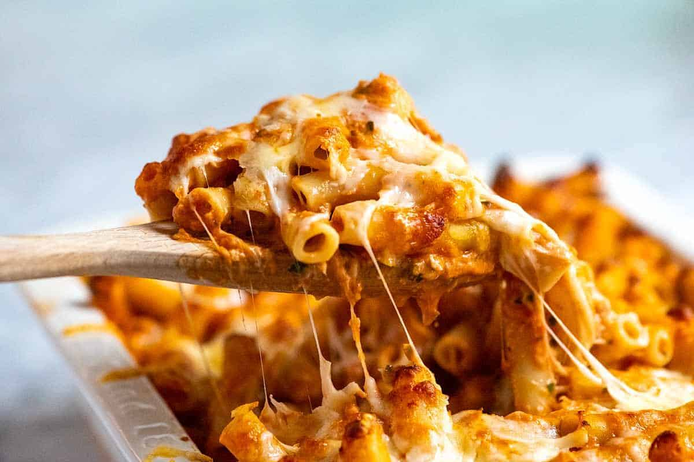

Home

Description
Lasagna is a wide, flat sheet of pasta. Lasagna can refer to either the type of noodle or to the typical lasagna dish which is a dish made with several layers of lasagna sheets with sauce and other ingredients, such as meats and cheese, in between the lasagna noodles.
Ingredients
- 1 lb (450g) ziti or penne pasta
- 1 lb (450g) ground beef or sausage
- 2 cups shredded mozzarella cheese
- 1/2 cup grated Parmesan cheese
Steps
-
Basic Steps:
- Cook pasta until al dente
- Brown the meat with onions and garlic, then simmer with marinara sauce and seasonings.
- Layer the cooked pasta, ricotta cheese, and meat sauce in a baking dish, topping with mozzarella and Parmesan.
- Bake at 375°F (190°C) for 25-30 minutes until bubbly and golden brown.